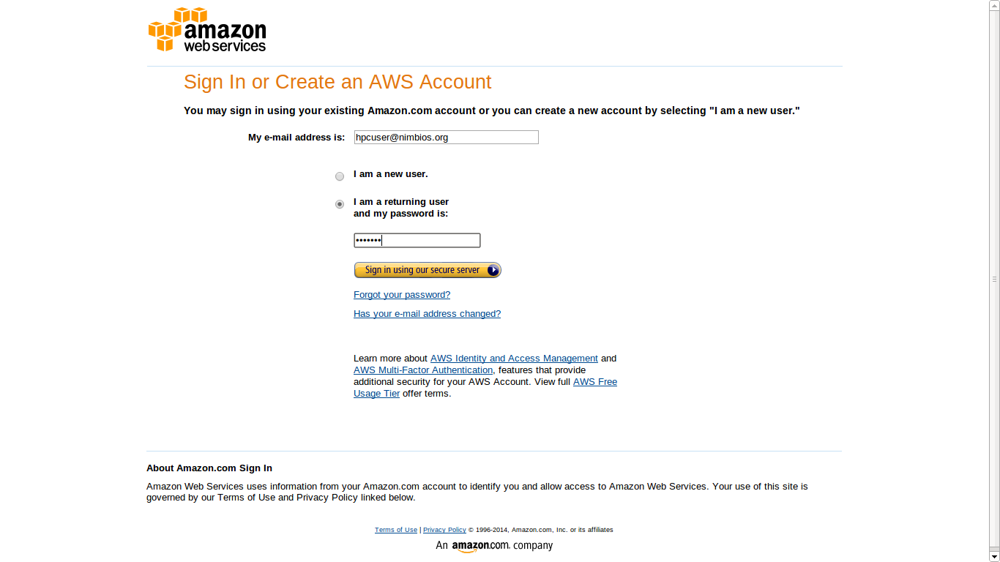
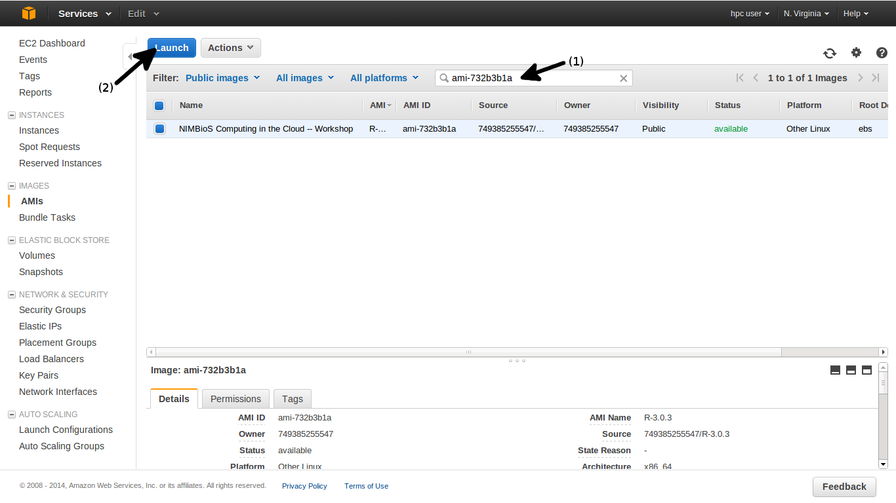
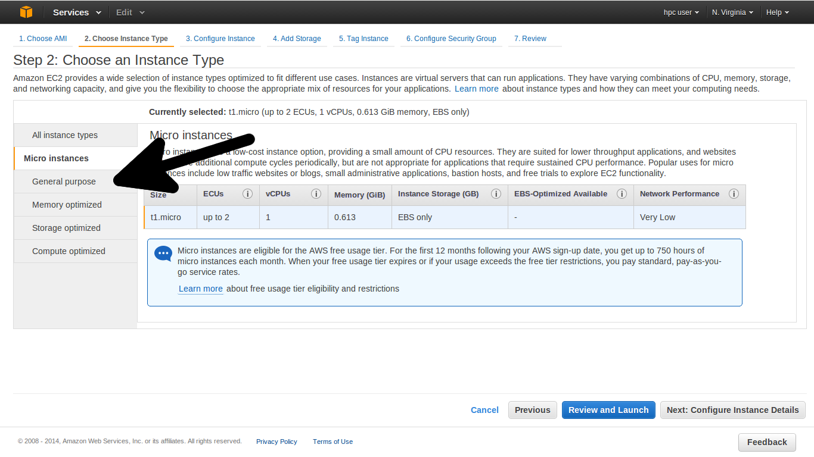
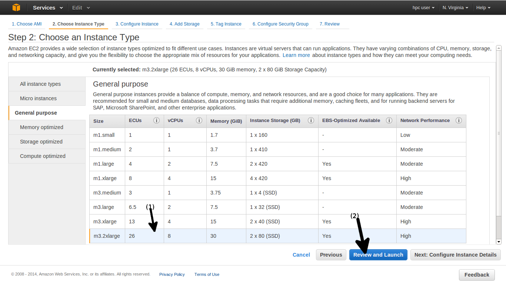
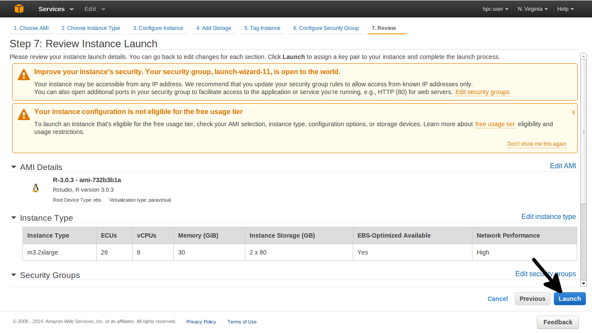
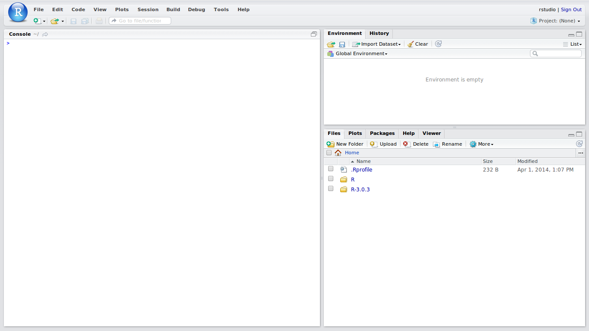

From the Amazon Web Services homepage , select "AWS Management Console" from the "My Account/Console" drop down menu.

Enter your AWS account credentials and sign in.
Select "EC2: Virtual Servers in the Cloud" from the selection list.

Change the current region to US East (N. Virginia) from the right side of the top navigation menu (if it is not already selected). Our provided Amazon Machine Images are located in the US East datacenter.

Select "AMIs" from the left-hand selection list, under the "Images" section.

From the "Filter" Bar, under the drop down menu labeled "Owned by me", select "Public images".

Enter the AMI ID which we have provided to you into the search area. Select the AMI and then click "Launch".
Select the type of EC2 instance to run. Here we choose "General purpose".
Now select the specific instance type. Here we choose "m3.2xlarge", an 8 vCPU instance. Afterwards, select "Review and Launch".
Select "Launch" in the lower right hand corner.
For users who only wish to use Rstudio, you will not need to worry about setting up an RSA key pair during this step.
Select "Proceed without a key pair", click the checkbox, and then click "Launch Instances".

Check the launch log of your instances if you wish. When you are finished, click "View Instances".

Select the running instance which we have created. In the bottom portion of the screen, additional details are displayed.
Copy the "Public DNS" field. We will need this in the next step to access the Rstudio web interface.

Paste the "Public DNS" from the previous step into the web browser URL area.
If your instance is currently running, then you should be greeted with the Rstudio login page.
Enter "rstudio" for both the username and password to login as the "rstudio" user.

Congratulations, you have now successfully set up Rstudio on your own server in the cloud.
